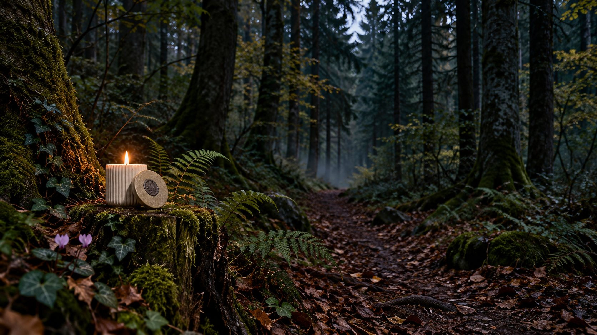
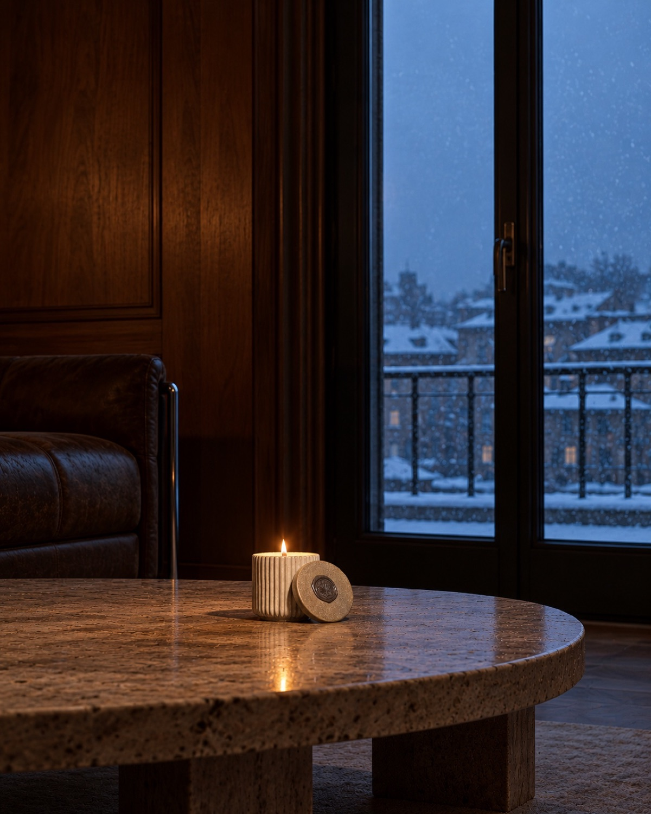
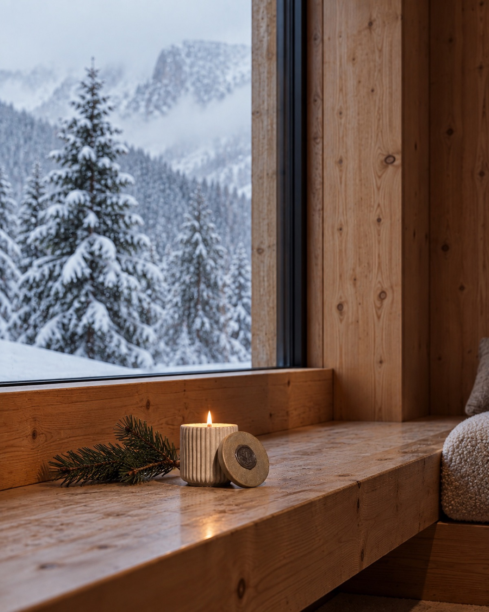
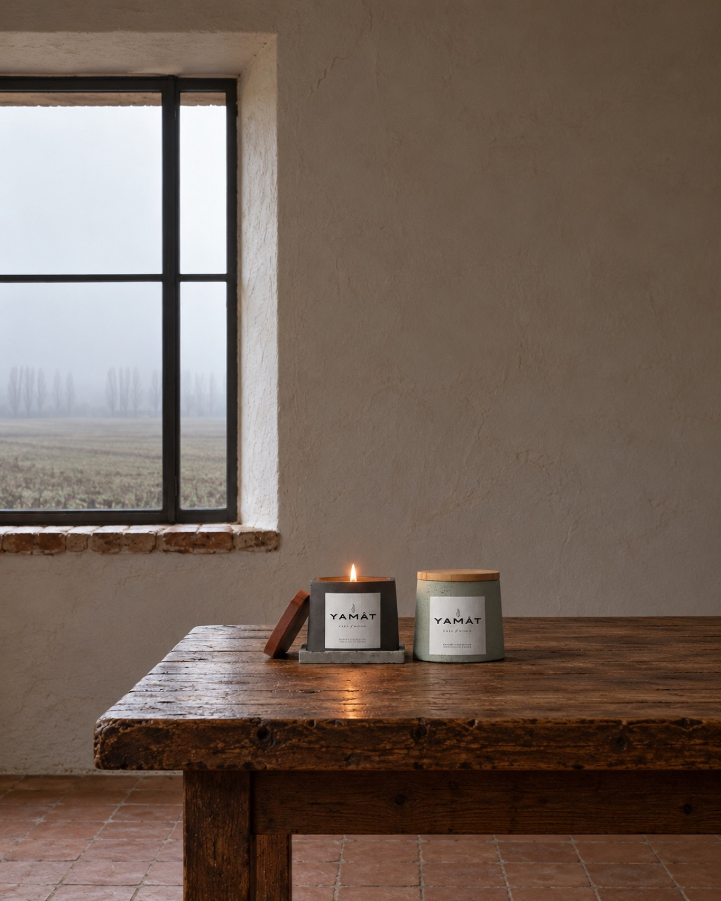
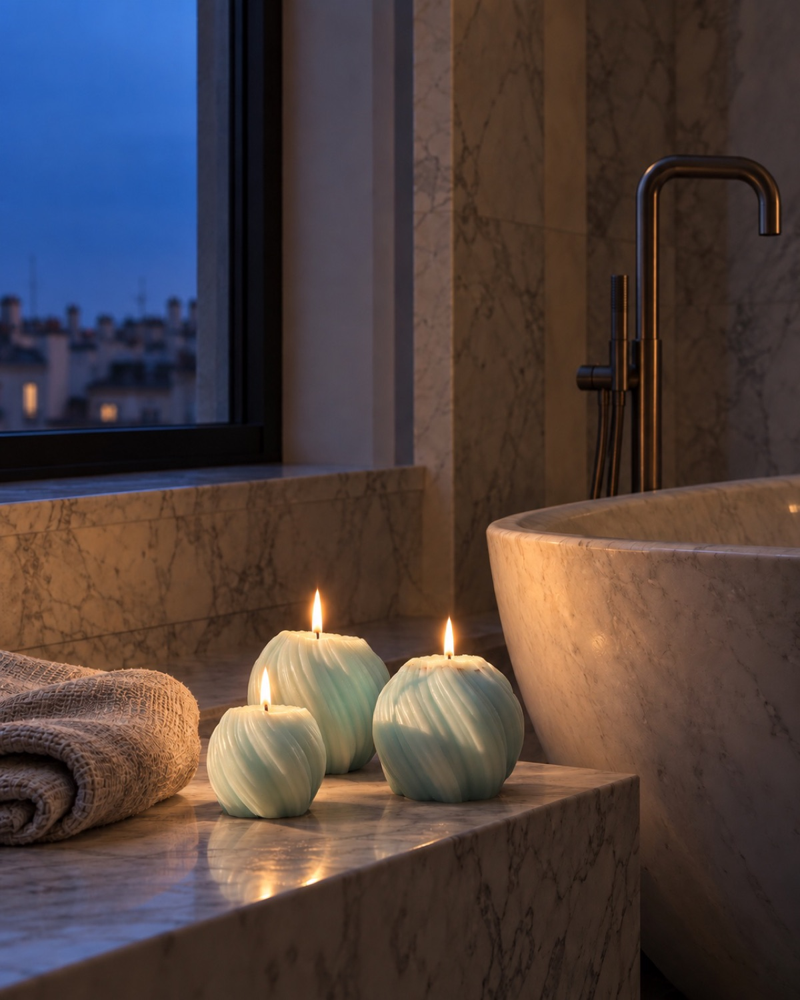
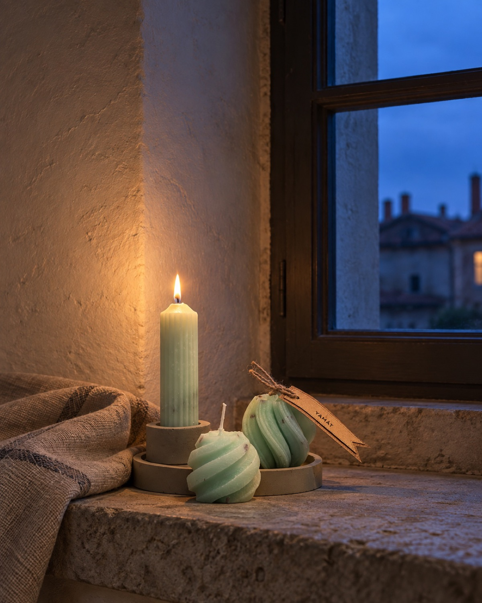

Il vaso
Cemento resistente alle alte temperature, lavorato a mano. Robusto, durevole, e ogni volta diverso.

Siamo Yamat, nati dal richiamo del legno. Il laboratorio è immerso in un bosco italiano, e il silenzio della natura guida ogni gesto.
Qui, tra alberi secolari, muschio e terra umida, modelliamo a mano i vasi in cemento. Ogni pezzo è unico, imperfetto per natura, come una scultura fatta dal tempo e dal vento.
Poche, scelte, sempre le stesse.
Cemento resistente alle alte temperature, lavorato a mano. Robusto, durevole, e ogni volta diverso.

Soia al 100%: una cera vegetale, biodegradabile, a basso impatto. Brucia pulita e lenta.

Legno sottile, di cedro o di abete. Mentre brucia crepita piano, come un fuoco nel bosco.
Il vaso si lavora a mano, uno alla volta. Le imperfezioni restano: sono la firma del pezzo.
Cera di soia pura, nei colori della collezione: panna, verde, verde acqua, celeste, azzurro, rosa antico, caffè, grigio blu notte.
In legno per le candele in cemento, doppio nell’Ovale. In stoffa per Trilogy Flames.
Il coperchio di cemento, come il vaso, sulla .01; in legno massello sulla .02D. Il sigillo di ceralacca sul coperchio di Kora e sul nastro dello Scrigno.
Kora, Trilogy Flames e le candele numerate sono edizioni limitate, fatte in piccoli lotti per tenere alta la qualità.
Dove vivono le candele, fuori dal bosco. Scorri di lato.





